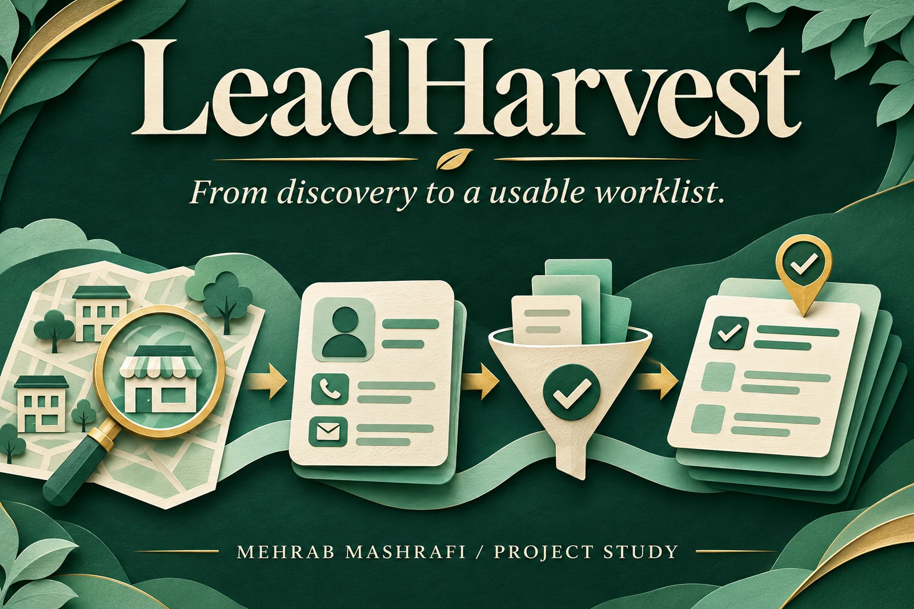

Sales operations · Founder led automation build
Hand sales a contact list they can work through
Finding a company is only the start of a sales worklist. I built LeadHarvest to connect discovery, contact checks and prioritisation, then made long research runs recoverable when they stopped.

- My role
- Workflow designer and builder, through AI Byters
- Work
- Search, enrichment, validation, scoring and Excel exports
- Project context
- Automation build iterated from v1 to v2
01 / Situation
The spreadsheet was the end of a scattered process.
Manual prospecting meant searching for a business, opening its website, finding contact details and deciding what to call first. Each researcher could apply a different standard, and location results could depend on the browser’s location.
I mapped that work as a sequence with an explicit handoff: search, enrich, validate, score and export. The useful output was a list a sales colleague could work through, with a contact route and a reason for its priority.
02 / My role
Build around the next person’s task.
I designed the workflow, defined contact quality rules and built the tool through two versions. I organised the Excel output around priority and channel, including High Priority, Standard, Phone Only, Email+ and Rejects, alongside the complete lead list.
The pipeline could discover companies from a keyword search or enrich a supplied list of company names. These entry points served different tasks while reusing the contact checks and export rules.
One lead, five explicit steps
- 01
Discover
Target the city and subarea - 02
Enrich
Inspect the business website - 03
Validate
Check phone and email fields - 04
Score & save
Prioritise and checkpoint the lead - 05
Export
Separate worklists by priority and channel
03 / Decisions
Check where and how to contact, then rank.
Each city and subarea was geocoded separately, so discovery could target the intended neighbourhood. Website enrichment looked for email and social contact routes, trying a lightweight request before opening a full browser.
Phone checks used the target country. Email filtering removed false positives and preferred business domains. I scored the configured business and contact signals after these checks, so a populated field alone did not become a high priority lead.
The score is a worklist priority, not purchasing intent. It also does not establish permission to contact a person; a team still needs to decide how and whether to use the records.
04 / Iteration
Save the lead before moving to the next.
The first version checkpointed after every five leads. In v2, I moved that save point to every completed lead and added automatic resumption for an interrupted run. Completed research no longer had to wait for the next batch checkpoint.
The practical outcome was a pipeline with consistent worklists and recoverable progress. Its quality can be inspected in the contact fields, rejection rules and saved state, without treating a contact score as a sales result.
The next handoff remains human: review the priority list, choose the suitable channel and handle the conversation.
Earlier checkpoint
Every 5 leads
Progress was saved in batches.
Revised checkpoint
Every lead
Completed records are saved before the next lead.
A workflow and recovery change, not a measured revenue or sales conversion gain.
Explore the implementation
Open the work
What makes a lead ready for your team?
Start with a target area, a useful contact route and the rules that separate a usable record from a reject.
Discuss a research pipeline ↗ Email meProject experience by Mehrab Mashrafi. Updated .